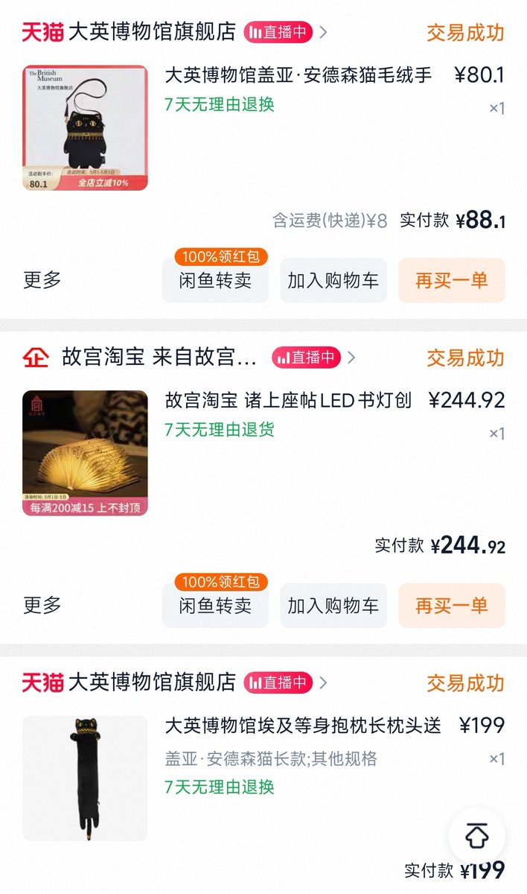

𝐒𝐚𝐜𝐚𝐛𝐚𝐦𝐛𝐚𝐬𝐩𝐢𝐬
@youlingjiayu
大半夜精神状态不好的时候疯狂刷淘宝，然后下单，莫名其妙给朋友买东西；给自己买一些贵又没用的东西总觉得是负罪感很强的事情，我知道我买回来一定会后悔，但只要是买给朋友就没关系了。

𝐒𝐚𝐜𝐚𝐛𝐚𝐦𝐛𝐚𝐬𝐩𝐢𝐬
@youlingjiayu
我以信息收集为基础的关系会导致我看到什么商品会下意识地想起某个朋友可能喜欢或者适合送给谁，这个能力有时候很好用但有的时候非常不妙。我控制不住我的脑子会联想到什么东西，喜欢谁就会想给谁很多很多东西。